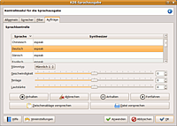
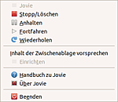

Jovie
Dieser Artikel wurde für die folgenden Ubuntu-Versionen getestet:
Dieser Artikel ist mit keiner aktuell unterstützten Ubuntu-Version getestet! Bitte diesen Artikel testen und das getestet-Tag entsprechend anpassen.
Zum Verständnis dieses Artikels sind folgende Seiten hilfreich:
Jovie (vormals kttds) ist der Sprachausgabe-Dienst für KDE und Teil des KDE-Accessibility-Projekts  . Er besteht aus Modulen für die Ausgabe von Texten über die D-Bus-Schnittstelle und kann so aus externen Programmen aufgerufen werden. Jovie kann beliebige Textdateien "vorlesen" und Texte aus diversen KDE-Anwendungen wie KMouth, Konqueror Okular oder Kate (auch als Bestandteil anderer Programme) oder Meldungen von KNotify wiedergeben. Zur Sprachausgabe wird dazu das Programm
. Er besteht aus Modulen für die Ausgabe von Texten über die D-Bus-Schnittstelle und kann so aus externen Programmen aufgerufen werden. Jovie kann beliebige Textdateien "vorlesen" und Texte aus diversen KDE-Anwendungen wie KMouth, Konqueror Okular oder Kate (auch als Bestandteil anderer Programme) oder Meldungen von KNotify wiedergeben. Zur Sprachausgabe wird dazu das Programm speech-dispatcher verwendet, als Sprachgeneratoren können Programme wie eSpeak oder theoretisch auch Festival eingesetzt werden. Jovie bietet außerdem die Möglichkeit, Filter z.B. für falsch ausgesprochene Wörter anzulegen sowie XML-Dateien in Text umzuwandeln.
Installation¶
Jovie befindet sich seit Ubuntu 10.10 in den Paketquellen. Folgende Pakete müssen installiert [1] werden:
jovie
xsltproc (optional, zur Unterstützung für SSML und Umwandlung von XML-Dokumenten)
 mit apturl
mit apturl
Paketliste zum Kopieren:
sudo apt-get install jovie xsltproc
sudo aptitude install jovie xsltproc
Notwendig ist die Installation von Sprachgeneratoren; zumindest ein Synthesizer ist notwendig, momentan liefert nur eSpeak direkt deutschsprachige Ausgaben:
espeak
flite
speech-dispatcher-festival
mit apturl
Paketliste zum Kopieren:
sudo apt-get install espeak flite speech-dispatcher-festival
sudo aptitude install espeak flite speech-dispatcher-festival
Danach wird das Programm gestartet, in KDE theoretisch über das "KMenü -> Jovie"; in GNOME über das Terminal[3], oder man legt sich einen Starter im Hauptmenü an [4]. Wer Jovie ständig nutzt, sollte den Start des Programms in den Autostart aufnehmen.
Der speech-dispatcher wird automatisch gestartet. Um Jovie steuern zu können, muss unter Unity allerdings erst das Tray-Icon-Applet freigeschaltet werden (siehe Applets aktivieren)

Konfiguration¶
Jovie nistet sich im Panel ein; die Konfiguration erfolgt über  -Klick auf das Icon, und dann Menüpunkt "Einrichten". Es öffnet sich ein Konfigurationsfenster, in dem der Dienst aktiviert wird (Reiter "Allgemein"). Unter "Sprecher" muss mindestens ein Eintrag vorliegen, sonst kann keine Ausgabe erfolgen. Unter "Filter" lassen sich Angaben zu Zeichenkettenersetzungen, dem XML-Umformer, sowie der Sprecherauswahl machen (es lassen sich bestimmte Merkmale festlegen, die zur Verwendung einer bestimmten Stimme oder Sprecher führen). Unter "Aufträge" können Einstellungen zum aktuell zu verwendenden Sprecher gemacht werden. Ohne eine Einstellung einer in "Sprecher" vorhandenen Stimme gibt Jovie allerdings ggf. nur eine akustische Fehlermeldung in englischer Sprache zu einer fehlerhaften Speech-Dispatcher-Einstellung aus. Leider speichert Jovie die in "Aufträge" gemachte Einstellung einer Sprache beim Beenden nicht, sodass diese bei jedem Neustart wiederholt werden muss.
-Klick auf das Icon, und dann Menüpunkt "Einrichten". Es öffnet sich ein Konfigurationsfenster, in dem der Dienst aktiviert wird (Reiter "Allgemein"). Unter "Sprecher" muss mindestens ein Eintrag vorliegen, sonst kann keine Ausgabe erfolgen. Unter "Filter" lassen sich Angaben zu Zeichenkettenersetzungen, dem XML-Umformer, sowie der Sprecherauswahl machen (es lassen sich bestimmte Merkmale festlegen, die zur Verwendung einer bestimmten Stimme oder Sprecher führen). Unter "Aufträge" können Einstellungen zum aktuell zu verwendenden Sprecher gemacht werden. Ohne eine Einstellung einer in "Sprecher" vorhandenen Stimme gibt Jovie allerdings ggf. nur eine akustische Fehlermeldung in englischer Sprache zu einer fehlerhaften Speech-Dispatcher-Einstellung aus. Leider speichert Jovie die in "Aufträge" gemachte Einstellung einer Sprache beim Beenden nicht, sodass diese bei jedem Neustart wiederholt werden muss.

Benutzung¶
Die "direkte" Bedienung erfolgt über das Einstellungsmenü, im Reiter "Aufträge" (oder das Drop-Down-Menü des Panel-Icons). Dort lässt sich über die entsprechenden Schaltflächen der Inhalt der Zwischenablage oder eine Textdatei vorlesen. Die Bedienelemente sind allerdings in der deutschen Übersetzung anscheinend falsch beschrieben; die erste "Anhalten"-Schaltfläche sollte wohl "Start/Stopp" heißen, die Bedienung funktioniert aber auch mit den anderen Schaltflächen (zumindest bei der Verwendung von eSpeak) nicht einwandfrei. Ein tatsächliches Anhalten (mit der zweiten "Anhalten"-Schaltfläche im Sinne einer Pause) lässt sich nicht realisieren; die Bedienung bleibt wirkungslos. Die tatsächliche Wiedergabe startet auch erst bei Bedienen der "Fortfahren"-Schaltfläche. Auch die Bedienelemente des Drop-Down-Menüs funktionieren nur teilweise. In der Version 0.6.0 (Precise) sind diese Mängel weitgehend behoben.
Aus Konqueror und Okular kann das Vorlesen der Seiten über "Extras -> Text vorlesen" aufgerufen werden. Sinnvoll ist es, den vorzulesenden Text zu markieren, weil sonst ggf. auch Sonderzeichen etc. wiedergegeben werden. Dasselbe Vorgehen gilt für Kate, zunächst muss dort allerdings in den "Einstellungen -> Erweiterungen -> KTextEditor-Modul für KTTDS" aktiviert werden. Unterstützt ein KDE-Programm KNotify, erscheint ein Menüeintrag "Benachrichtigungen" im Menü "Einstellungen" dieses Programms. Die hier möglichen Einstellungen für KNotify unterscheiden sich je nach Anwendung.
Probleme¶
Die Wiedergabe unter Kate scheint noch nicht vollständig implementiert zu sein, ein Aufruf über "Extras -> Text vorlesen" startet zwar Jovie, allerdings erfolgt erst einmal eine Fehlermeldung zu nicht erfolgter D-Bus-Verbindung. Erst wenn speech-dispatcher manuell im Terminal gestartet wird, beginnt die Textausgabe.
Das Bearbeiten der eingerichteten Sprecher-Stimmen in "Einstellungen -> Sprecher" ist anscheinend nicht möglich. Auch werden als Auswahl nur die Standard-eSpeak-Stimmen angeboten. Andere Synthesizer-Stimmen, z.B. über eSpeak verwendbare Mbrola-Stimmen oder die aus Festival, werden nicht berücksichtigt.
Teilweise werden bei der Wiedergabe von Textdateien in deutscher Sprache Umlaute und das Eszett nicht richtig wiedergegeben, hier muss auf die passende Textcodierung der Dateien geachtet werden.
Alternativen¶
Sprachausgabe
 Übersichtsartikel
ÜbersichtsartikelKMouth kann auf Jovie zurückgreifen
Orca - der GNOME-Screenreader bietet vielfältige Konfigurationsmöglichkeiten und kann Texte aller Anwendungen lesen.

- Erstellt mit Inyoka
-
 2004 – 2017 ubuntuusers.de • Einige Rechte vorbehalten
2004 – 2017 ubuntuusers.de • Einige Rechte vorbehalten
Lizenz • Kontakt • Datenschutz • Impressum • Serverstatus -
Serverhousing gespendet von